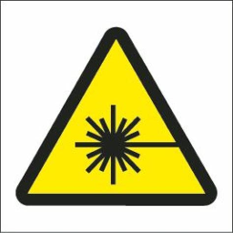
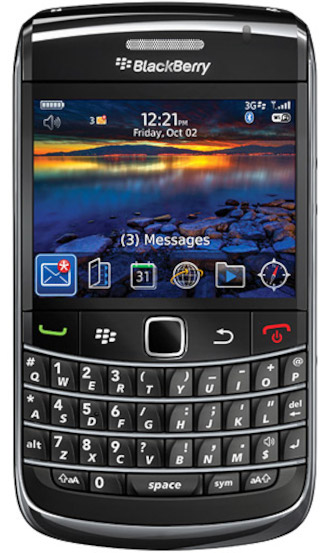

January 2024
 Yet another desktop Raspberry Pi media player (Jan 2024)
Yet another desktop Raspberry Pi media player (Jan 2024)Using a Raspberry Pi as a media player is by no means a new idea. However, using one as a self-contained hifi component is not common, and requires a bit of work.
Categories: Raspberry Pi, hifi

Making tab-and-slot boxes for electronic prototypes. Or: how I stopped worrying and learned to love the laser (Jan 2024)Some thoughts on my first experiments with the design of electronics enclosures for laser cutting.
Categories: Raspberry Pi, electronics
Following on from my article on the rudiments of the Kafka Streams API, this one introduces stateful operations like counting and aggregation.
Categories: software development, Java
Kafka Streams is a Java library and framework for creating applications that consume, process, and return Apache Kafka messages. This article provides a tutorial about implementing a very basic Streams application.
Categories: software development, Java
One of the earliest mass-market car satnav units, the Garmin Nuvi 300 still has features that modern devices lack. Why is that?
Categories: TDMTLTAM

 Command-line hacking: calculating the phase of the Moon (Jan 2024)
Command-line hacking: calculating the phase of the Moon (Jan 2024)How to use Bash shell arithmetic, along with the 'date' utilty, to calculate the phase of the Moon on a particlar day.
Categories: Linux, command-line hacking

They don't make 'em like that any more: Blackberry Bold 9700 (Jan 2024)The Bold 9700 was a premium cellphone from a company at the top of its game. Does it merit the fawning reviews it collected in 2009?
Categories: TDMTLTAM
Have you posted something in response to this page?
Feel free to send a webmention
to notify me, giving the URL of the blog or page that refers to
this one.